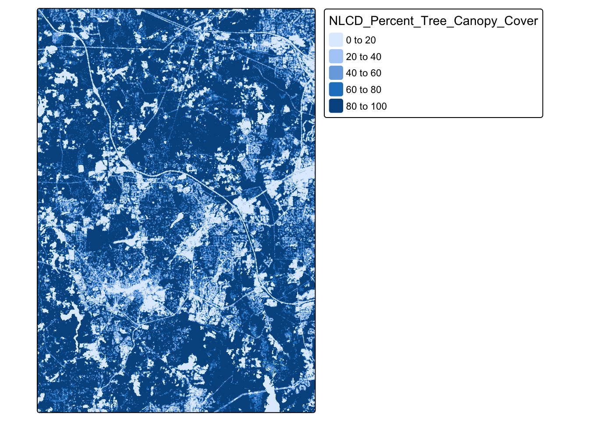
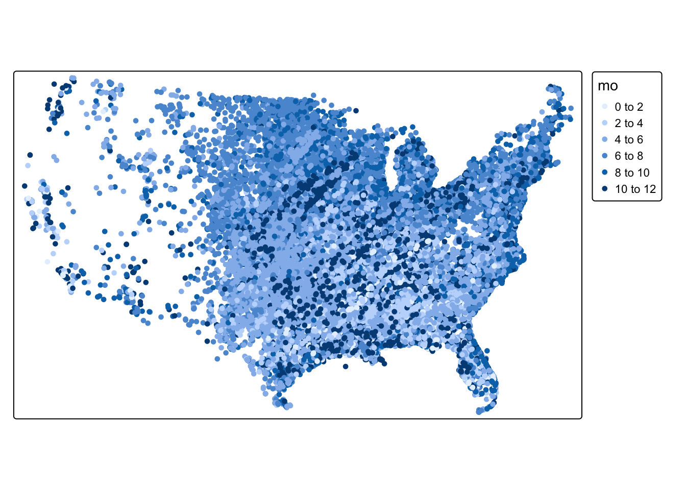
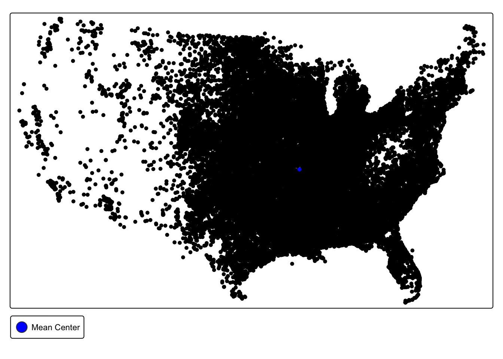
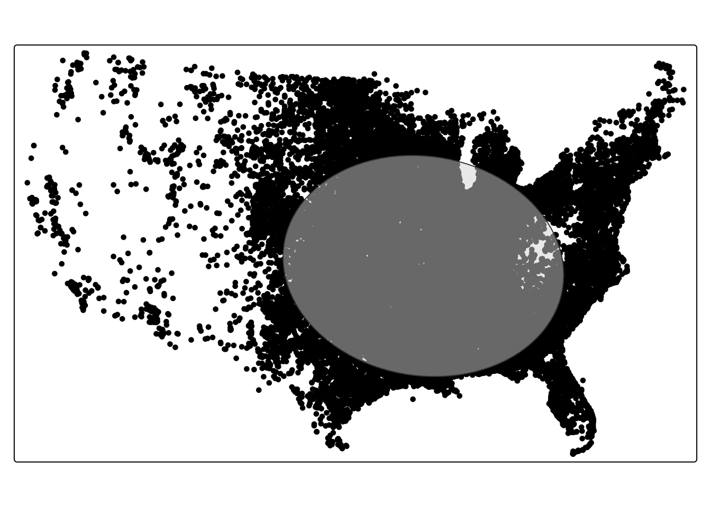

#load libraries
library(sf)
library(tmap)
library(sfdep)
library(tidyverse)
library(terra)
##the command to read in vector data using the sf package is st_read()
torn <- st_read("https://drive.google.com/uc?export=download&id=1K5yFnDthJGKnWPragZPmQyCDpf8seSEI")
##this data is not spatial yet, so we'll use our regular read in command
nc_hosp <- read_csv("https://drive.google.com/uc?export=download&id=1Ylu33qdfA-pXb0uHtKMQIcDeVBOwUHMV"
)
## the command to read in raster data using the terra package is rast()
tree_cover <- rast("https://drive.google.com/uc?export=download&id=1_SqO-ocyLCg3g1Mv1ZbqOd5Pa1sTddps")9 Introduction to Spatial Data
In this chapter, we will start working with spatial data formats using the sf (for vector data), spdep library (spatial statistics), the terra package (for raster data), and tmap (for mapping) packages. After completing these exercises, you should be able to:
- Read in spatial data
- Explore spatial attributes, including identifying and transforming CRS
- Create a spatial object from a table coordinates
- Calculate descriptive statistics using rasters
- Calculate spatial descriptive statistics
- Create a simple map of vector and raster data
We will use the following datasets:
- US tornado touchdown points from 1954-2022 from NOAA’s Storm Prediction Center
- North Carolina hospitals from NCOneMap (non-spatial file)
- Raster of tree canopy coverage across the Chapel Hill Area (from the 2023 National Land Cover Dataset).
Create a new .Rmd document and add the code chunk below to read in the data.
9.1 Getting to Know Spatial Data
Add a first-level header called “Getting to Know Spatial Data”. As you move through the tutorial, copy and paste the commands, making sure each command has a descriptive comment.
9.1.1 Inspecting Geometry in Vector Data
All vector data has a required column, which is almost always named geometry. This column stores the spatial component of each data point (row). We can get a basic understanding of this geometry column by running the following command:
## inspect geometry of tornado dataset
st_geometry(torn)Q1: Does this dataset have point, line, or polygon geometries?
Q2: What is the CRS of this dataset? (you can also find the crs by running the command crs()
9.1.2 Inspecting Raster Structure
Raster data are not structured like tibbles (or vectors). Instead of rows and columns in a table, rasters represent values stored in a regular grid of cells across space. Remember that the attributes of the raster data are stored as the cell value (as opposed to columns in a row). The following
#get resolution of raster data. Remember that the resolution will be in the unit of the CRS.
res(tree_cover)[1] 30 30#get the spatial extent of the raster
ext(tree_cover)SpatExtent : -8807610, -8788650, 4279980, 4307520 (xmin, xmax, ymin, ymax)#get the crs of the raster
crs(tree_cover)[1] "PROJCRS[\"WGS 84 / Pseudo-Mercator\",\n BASEGEOGCRS[\"WGS 84\",\n DATUM[\"World Geodetic System 1984\",\n ELLIPSOID[\"WGS 84\",6378137,298.257223563,\n LENGTHUNIT[\"metre\",1]]],\n PRIMEM[\"Greenwich\",0,\n ANGLEUNIT[\"degree\",0.0174532925199433]],\n ID[\"EPSG\",4326]],\n CONVERSION[\"unnamed\",\n METHOD[\"Popular Visualisation Pseudo Mercator\",\n ID[\"EPSG\",1024]],\n PARAMETER[\"Latitude of natural origin\",0,\n ANGLEUNIT[\"degree\",0.0174532925199433],\n ID[\"EPSG\",8801]],\n PARAMETER[\"Longitude of natural origin\",0,\n ANGLEUNIT[\"degree\",0.0174532925199433],\n ID[\"EPSG\",8802]],\n PARAMETER[\"False easting\",0,\n LENGTHUNIT[\"metre\",1],\n ID[\"EPSG\",8806]],\n PARAMETER[\"False northing\",0,\n LENGTHUNIT[\"metre\",1],\n ID[\"EPSG\",8807]]],\n CS[Cartesian,2],\n AXIS[\"easting (X)\",east,\n ORDER[1],\n LENGTHUNIT[\"metre\",1]],\n AXIS[\"northing (Y)\",north,\n ORDER[2],\n LENGTHUNIT[\"metre\",1]],\n USAGE[\n SCOPE[\"Web mapping and visualisation.\"],\n AREA[\"World between 85.06°S and 85.06°N.\"],\n BBOX[-85.06,-180,85.06,180]],\n ID[\"EPSG\",3857]]"#get the dimensions of the raster
dim(tree_cover)[1] 918 632 1#get a summary of the cell values
summary(tree_cover)Warning: [summary] used a sample NLCD_Percent_Tree_Canopy_Cover
Min. : 0.0
1st Qu.:47.0
Median :82.0
Mean :65.5
3rd Qu.:89.0
Max. :99.0 Q3: What is the CRS of the raster dataset. What does that tell you about the unit of resolution? (feet, meters, miles)
Q4: What do our summary statistics tell us about tree cover in Chapel Hill?
9.1.3 Making Data Spatial
Often we have spatial data that is not in an explicitly spatial format (i.e. geojson, shapefile, etc.) but has spatial information in it as columns (a latitude and longitude column). We can easily convert this to a spatial feature in R as long as we know the coordinate system.
For instance, we can convert the hospital data from a .csv to spatial features because this dataset has an X and Y column and we know the CRS is 2264 (North Carolina State Plane)
## transform to spatial features
spatial_hosp <- nc_hosp |> st_as_sf(coords = c("X", "Y"), crs = 2264)Q5: Inspect the geometry column of this dataset
9.1.4 Making Basic Maps
We will use the tmap package to create maps of our spatial data. Mapping data is a very important component of getting to know our data.
We can make a very basic map of tornado locations using the following command:
#tm_shape references the object, we use tm_dots for points tm_polygons for polygons and tm_lines for lines
tm_shape(torn) + tm_dots()
##we can plot a variable by adding an argument into our tm_dots command
## this maps the month the tornado happened
tm_shape(torn) + tm_dots(fill = "mo")
Q6: Make a basic map of the spatial_hosp object that displays the number of general beds in each hospital (ngenlic)
To map rasters, we use the
tm_shape(tree_cover) + tm_raster()
Q7: Can you notice any recognizable features in the raster?
9.2 Spatial Descriptive Statistics
With vector-based spatial data, we can expand our descriptive statistics to include spatial descriptive statistics. Combining traditional descriptive statistics with spatial descriptive statistics can expand our understanding of the dataset.
9.2.0.1 Mean Center
The mean center of a spatial dataset represents the average location of a set of points and is calculated by taking the average of all the x-coordinates and all the y-coordinates in the dataset.
#calculate mean center of all tornados in dataset
torn_mean_center <- center_mean(torn)
#map tornadoes and mean center
tm_shape(torn) + tm_dots() + tm_shape(torn_mean_center) + tm_dots(fill = "blue") + tm_add_legend(
type = "symbols",
labels = "Mean Center",
fill = "blue"
)
Q8. What does the location of our mean center tell us about the spatial distribution of tornadoes in the United States?
9.2.0.2 Weighted Mean Center
The weighted mean center calculates the average location, but allows you to select a variable to weight by. The calculation then gives more influence to features with larger values of that variable. For instance, we could give higher weight to fatal tornadoes
## calculate weighted mean center using "fat" variable
torn_w_mean_center <- center_mean(torn, weight = torn$fat)
##map mean center and weighted mean center
tm_shape(torn) + tm_dots() + tm_shape(torn_mean_center) + tm_dots(fill = "blue", ) + tm_shape(torn_w_mean_center) + tm_dots(fill = "red") + tm_add_legend(
type = "symbols",
labels = c("Mean Center", "Weighted Mean Center"),
fill = c("blue", "red")
)
Q9. What does the difference between the mean center and the weighted mean center (weighted by fatalities) tell us about the spatial distribution of fatal tornadoes?
9.2.0.3 Standard Deviational Ellipse
The standard deviational ellipse is a method for summarizing the spatial central tendency, dispersion, and directional trends. The ellipse visually represents the spread of the data and the direction of the spread. It is centered on the mean center and its axes represent the standard deviation of the x and y coordinates.
#calculate standard ellipse values
std_ellip_torn <- std_dev_ellipse(torn)
#create an ellipse of those values
std_ellip_torn <- sfdep::st_ellipse(geometry =std_ellip_torn,
sx = std_ellip_torn$sx,
sy = std_ellip_torn$sy,
rotation = -std_ellip_torn$theta)
#map the ellipse with transparency
tm_shape(torn) + tm_dots() + tm_shape(std_ellip_torn) + tm_polygons(fill_alpha = .5)
9.2.1 Mini Challenge #3
Add a new first level header called “Mini-Challenge #3”. Under that header, add a code chunk. In the code chunk, write commands to do the following:
- Create two objects– one representing all tornadoes before 2000 and one representing all tornadoes after 2000.
- Calculate the weighted mean center (by
mag) for tornadoes before and after 2000 - Determine what this difference tells us about how the spatial pattern of tornadoes has changed over time.